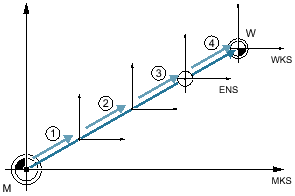

Following reference point approach, the actual value display for the axis coordinates is based on the machine zero (M) of the machine coordinate system (Machine). The program for machining the workpiece, however, is based on the workpiece zero (W) of the workpiece coordinate system (Work). The machine zero and workpiece zero are not necessarily identical. The distance between the machine zero and the workpiece zero depends on the workpiece type and how it is clamped. This zero offset is taken into account during execution of the program and can be a combination of different offsets.
Following reference point approach, the actual value display for the axis coordinates is based on the machine zero of the machine coordinate system (Machine).
The actual value display of the positions can also refer to the SZS coordinate system (settable zero system). The position of the active tool relative to the workpiece zero is displayed.
① | Base offset |
② | Work offset, coarse |
③ | Work offset, fine |
④ | Coordinate transformation |
Work offsets
When the machine zero is not identical to the workpiece zero, at least one offset (base offset or zero offset) exists in which the position of the workpiece zero is saved.
The base offset is a zero offset that is always active. If you have not defined a base offset, its value will be zero. The base offset is specified in the "Zero Offset - Base" window.
Every zero offset (G54 to G57, G505 to G599) consists of a coarse offset and a fine offset. You can call the zero offsets from any program (coarse and fine offsets are added together).
You can save the workpiece zero, for example, in the coarse offset, and then store the offset that occurs when a new workpiece is clamped between the old and the new workpiece zero in the fine offset.
| Note |
Deselect fine offsetYou have the option of deselecting the fine offset using machine data MD18600 $MN_MM_FRAME_FINE_TRANS |
See also:
Displaying and editing base zero offset
Displaying and editing settable zero offset
Displaying and editing details of the zero offsets
Display active zero offset